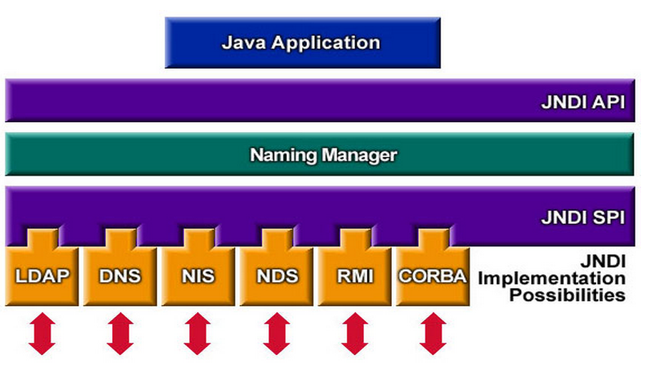

面向对象，就意味着对象之间的依赖不可避免。而好的应用程序必然是可维护性高，可扩展性强。依赖或者说耦合是这两者的天敌，耦合度越高程序就越不灵活，所以各种框架各种规范蜂拥崛起，其根本目的就是为了解耦。
为什么会出现JNDI
在讲JNDI前,先来回忆一下绝大多数Java程序员是如何访问数据库的。
在程序中进行JDBC编码
记得刚入门时，第一次进行JDBC编程用的是MySQL数据库，写了一大坨代码实现了对数据库的访问，当时的心情非常兴奋。
public static void main(String[] args) {
Connection conn = null;
Statement stmt = null;
try{
//加载驱动包
Class.forName("com.mysql.jdbc.Driver");
//打开连接
conn = DriverManager.getConnection("jdbc:mysql://localhost/test","username","username");
//查询
stmt = conn.createStatement();
String sql = "SELECT id, first, last, age FROM Employees";
ResultSet rs = stmt.executeQuery(sql);
//打印查询数据
while(rs.next()){
int id = rs.getInt("id");
int age = rs.getInt("age");
String first = rs.getString("first");
String last = rs.getString("last");
System.out.print("ID: " + id);
System.out.print(", Age: " + age);
System.out.print(", First: " + first);
System.out.println(", Last: " + last);
}
//释放资源
rs.close();
stmt.close();
conn.close();
}catch(SQLException se){
se.printStackTrace();
}catch(Exception e){
e.printStackTrace();
}finally{
//释放资源
try{
if(stmt!=null)
stmt.close();
}catch(SQLException se2){
}
try{
if(conn!=null)
conn.close();
}catch(SQLException se){
se.printStackTrace();
}
}
}
配置文件配置连接池
后来进入工作了，上面的方式给我们带来很大的麻烦，测试环境和生产环境数据库连接不一样，用户名密码也不一样，这样在发布时很麻烦，要将程序改一遍，还要重新编译才能上线，上线后发现连接错了又要重新编译，烦不胜烦而且耽误时间。上面的一大坨代码看着就头疼。于是Hibernate这种框架，将数据源配置在配置文件中。
<!-- 配置数据源 -->
<bean id="dataSource" class="com.alibaba.druid.pool.DruidDataSource" init-method="init" destroy-method="close">
<property name="driverClassName" value="com.mysql.jdbc.Driver" />
<property name="url" value="jdbc:mysql://192.168.4.5:3306/test?useUnicode=true&characterEncoding=utf-8" />
<property name="username" value="username-test" />
<property name="password" value="pwd" />
<property name="maxActive" value="20" />
<property name="initialSize" value="1" />
<property name="maxWait" value="60000" />
<property name="minIdle" value="1" />
<property name="timeBetweenEvictionRunsMillis" value="3000" />
<property name="minEvictableIdleTimeMillis" value="300000" />
<property name="validationQuery" value="SELECT 1 FROM DUAL" />
<property name="testWhileIdle" value="true" />
<property name="testOnBorrow" value="false" />
<property name="testOnReturn" value="false" />
</bean>
上面的方法看上去很不错，我相信大部分JavaWeb程序员都会是用这种方式去访问数据库的。把数据库连接交给Spring容器管理，程序员只需要关心配置就行了，有什么问题改下配置就行了。这样的方式看上去没什么毛病，但不是最好的解决方案。
J2EE中的角色分配
组件提供者
这个角色负责创建 J2EE 组件，J2EE 组件可以是 Web 应用程序、企业级 JavaBean（EJB）组件，或者是应用程序客户机（例如基于 Swing 的 GUI 客户机应用程序）。组件提供者包括：HTML 设计师、文档编程人员以及其他开发人员角色。大多数 J2EE 开发人员在组件提供者这一角色上耗费了相当多的时间。
应用程序组装者
这个角色将多个 J2EE 模块捆绑成一个彼此结合的、可以部署的整体：企业归档（EAR）文件。应用程序组装者要选择组件，分清它们之间的交互方式，配置它们的安全性和事务属性，并把应用程序打包到 EAR 文件中。许多 IDE，例如 WebSphere® Studio、IDEA、JBuilder、WebLogic Workshop 和其他 IDE，都可以帮助应用程序组装者以交互方式配置 EAR 文件。
部署人员
这个角色负责部署，这意味着将 EAR 安装到 J2EE 容器（应用服务器）中，然后配置资源（例如数据库连接池），把应用程序需要的资源绑定到应用服务器中的特定资源上，并启动应用程序。
系统管理员
这个角色负责保证容器需要的资源可用于容器。
在许多公司中，上面的分工并不明确，程序员既要关心数据库配置对数据库性能的影响，以及其他的资源连接，又要关心组件的业务逻辑。特别是小公司，程序员往往都是身兼以上4个角色的任务,这就导致资源配置的工作放在了程序中或者是部署文件中。从而造成各个角色之间的强烈耦合，一旦项目变得复杂，开发人员越来越多，项目的分工会变得很难。
项目开发是分角色的，要降低不同角色之间的耦合。比如要使用某个远程对象，远程对象在哪里，这本应该是部署人员来管理的，如果在开发时就将资源部署内容硬编码，那么就增大了之后修改部署的难度。这就是JDNI产生的原因。部署人员负责确保部署环境中存在组件所需的资源，并将组件绑定到平台的可用资源上。开发和测试组件时，为了临时测试代码，开发人员要承担一些部署方面的职责。重要的是要理解：这么做的时候，您就走出了开发人员的领域。最好开发人员能忽略将要访问的特定外部资源，只需要知道其他人会提供使用这些外部资源所需的链接即可。
JNDI是什么
JNDI是 Java 命名与目录接口（Java Naming and Directory Interface），是一组在Java应用中访问命名和目录服务的API，或者说在应用中引用与程序无关的外部资源（可能是数据库资源，也可能是其他资源），降低了应用和其他应用程序组件之间的耦合，使应用更加易于配置、易于部署。在J2EE规范中是重要的规范之一。

说明
JNDI提出的目的是为了解藕，是为了开发更加容易维护，容易扩展，容易部署的应用。JNDI是一个sun提出的一个规范,具体的实现是各个j2ee容器提供商，sun只是要求，j2ee容器必须有JNDI这样的功能。JNDI在j2ee系统中的角色是“交换机”，是J2EE组件在运行时间接地查找其他组件、资源或服务的通用机制。
命名和目录服务
关于命名服务,其实我们很多时候都在用它,但是并不知道它是它,比较典型的是域名服务器DNS(Domain Naming Service),大对人对DNS还是比较了解的,它是将域名映射到IP地址的服务.比如百度的域名www.baidu.com所映射的IP地址是http://202.108.22.5/,你在浏览器中输入两个内容是到的同一个页面.用命名服务器的原因是因为我们记忆baidu这几个有意义的字母要比记202.108.22.5更容易记忆,但如果站到计算机的角度上,它更喜欢处理这些数字。
从我们生活中找的话还有很多类似的例子,比如说你的身份证号和你的名字可以”理解”成一种命名服务,你的学号和姓名也可以”解释”为一种命名服务。
可以看出命名服务的特点:一个值和另一个值的映射,将我们人类更容易认识的值同计算机更容易认识的值进行一一映射。
至于目录服务,从计算机角度理解为在互联网上有着各种各样的资源和主机,但是这些内容都是散落在互联网中,为了访问这些散落的资源并获得相应的服务,就需要用到目录服务。
从我们日常生活中去理解目录服务的概念可以从电话簿说起,电话簿本身就是一个比较典型的目录服务,如果你要找到某个人的电话号码,你需要从电话簿里找到这个人的名称,然后再看其电话号码。
Tomcat中的JNDI资源
Tomcat配置JNDI数据源
在Tomcat的/conf/context.xml文件中配置JNDI数据源,Tomcat能够自动检测到context.xml文件内容的修改，并重新加载（未验证）。JNDI规范允许我们通过对象的“名称”来访问这个数据源对象。
<!-- JDBC数据源 -->
<Resource name="mysql-jndi-test"
auth="Container"
type="javax.sql.DataSource"
driverClassName="com.mysql.jdbc.Driver"
url="jdbc:mysql://192.168.4.5:3306/grain-trading?useUnicode=true&characterEncoding=utf-8"
username="root"
password="pwd"
maxActiv ="20"
maxIdle="1"
maxWait="1"
/>
定义Resource的名称为mysql-jndi-test，可以定义多个<Resource>节点来连接多个数据库。
在web.xml中配置资源引用
<resource-ref>
<description>jndi data source test</description>
<res-ref-name>mysql-jndi-test</res-ref-name>
<res-type>javax.sql.DataSource</res-type>
<res-auth>Container</res-auth>
</resource-ref>
程序中引用资源
DataSource dataSource = null;
Statement stmt = null;
try {
Context context = new InitialContext();
//根据资源名称搜索
dataSource = (DataSource)context.lookup("java:comp/env/mysql-jndi-test");
Connection conn = dataSource.getConnection();
//查询
stmt = conn.createStatement();
String sql = "SELECT id,phone FROM tbl_user";
ResultSet rs = stmt.executeQuery(sql);
while(rs.next()){
int id = rs.getInt("id");
String phone = rs.getString("phone");
System.out.print("ID: " + id);
System.out.println(", phone: " + phone);
}
rs.close();
stmt.close();
conn.close();
} catch (NamingException e) {
// Exception handler
e.printStackTrace();
} catch (SQLException e) {
e.printStackTrace();
}
ID: 1, phone: 18556557289
ID: 7, phone: 13191512345
ID: 8, phone: 18909692576
ID: 9, phone: 15155881028
ID: 10, phone: 13109170001
ID: 11, phone: 13109170002
ID: 12, phone: 13109170003
ID: 13, phone: 13109170004
ID: 14, phone: 13109170005
ID: 15, phone: 15209832896
ID: 16, phone: 15755179002
ID: 17, phone: 15209861039
ID: 18, phone: 18956001364
ID: 19, phone: 13100001111
ID: 20, phone: 13200001111
Spring容器引用资源
注意，使用Spring容器配置JNDI时不需要配置Web.xml文件。只需要配置spring数据源bean即可。
<bean id="dataSource" class="org.springframework.jndi.JndiObjectFactoryBean">
<property name="jndiName">
<value>java:comp/env/mysql-jndi-test</value>
</property>
</bean>